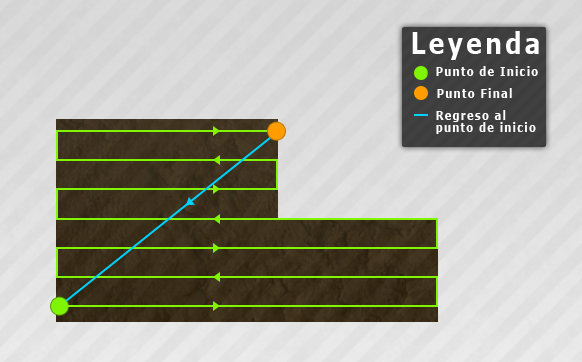

En general, el control de Courseplay funciona con el ratón, debido a que las teclas libres en Farming Simulator son más bien raras. Al utilizar el botón derecho del ratón se activa el HUD del Courseplay, donde puede configurar los conductores. Además de un par de funciones, como iniciar y detener la conducción, están disponibles para el teclado, mediante el uso de las teclas de CTRL+KP 7 a CTRL+KP 9. En el hud puede cambiar la forma de abrir o cerrar el courseplay con el uso del teclado (por defecto: CTRL+SUPR).
HUD
Al abrir el HUD, los controles del ratón se activan automáticamente. Es decir, no se puede utilizar el ratón para mover la cámara. Para desactivar los controles del ratón, debe hacer clic en el botón derecho del ratón. Alternativamente, usted puede hacer clic en la X en la esquina superior derecha del HUD. Si lo hace, se cierra el hud y desactiva los controles del ratón, ya que se cierra el courseplay
El HUD está dividido en varias páginas. Usted puede navegar a través de estos, ya sea usando las flechas izquierda / derecha ‹/› en la parte superior del HUD, o haciendo clic directamente sobre el icono de la página correspondiente en la parte superior. Tenga en cuenta que determinadas páginas se desactivan según en el modo seleccionado.
En la sección central de cada página, hay multitud de ajustes y opciones que se pueden elegir para dar órdenes, simplemente haciendo clic en la acción elegida o de sus correspondientes botones (+/-/‹/›) con el botón izquiero del ratón. Ciertos valores y ajustes como desplazarse a través de la lista de rutas, los ajustes de anchura, velocidades oder porcentajes, etc, se puede modificar en pasos más grandes pulsando la tecla CTRL mientras hace click en los botones.
En la parte inferior de la hud encontrará información sobre el conductor, la ruta cargada y el estado actual. También en esta sección, usted puede guardar la ruta actual haciendo click .
HUD: Controles conducción
Sin ruta cargada
Empezar grabación
Con esta opción, se activa el modo grabación en el Courseplay. Tu puedes conducir y grabar la ruta que el conducctor podrá usar más tarde. Tras la activación, tres huevos en un intervalo de aprox. 10 a 20 mts. se mostrará en la salida. Usted debe asegurarse de que ir más o menos recto hasta llegar al tercer huevo (tercer punto de paso).
Cuando la grabación esta activa, puede desactivar los controles del ratón, haga clic en el botón derecho del ratón, así puede mirar a su alrededor mientras conduce y graba.
Pausa de la grabación
Durante la grabación se puede poner en pausa la grabación con esta opción. Una flecha amarilla aparecerá en pantalla, que muestra la dirección hasta el último punto. Además, durante la pausa puede eliminar los últimos puntos, respectivamente.
Parar grabación
Esta opción solo esta disponible durante la grabación. Cuando se alcanza el punto final de la ruta, haga click en "detener la grabación". Se recomienda tener aproximadamente desde el punto final de 5 a 10 mts. antes del punto de inicio, y que tenga aproximadamente la misma dirección que el punto de inicio, es decir, debes terminar mirando hacia el punto de inicio, como si estubierás detrás de un vehículo que iniciara esa ruta.
Ajustar el punto de espera
Durante la grabación, usted tiene la posibilidad de establecer puntos de espera en la ruta. En esos puntos, el conductor, durante la marcha de la ruta, se detenga y espere hasta que le dices que continuer, o el tiempo de espera configurado ha pasado. Cuando un conductor llega a un punto de espera, aparecerá un mensaje (XYZ ha alcanzado el punto de espera.).
Establecer punto de cruce
Los puntos de cruce son "señales" o "puntos de combinación" donde dos rutas separadas pueden combinarse (see Administrador de rutas). En ambas rutas, se determinan dos puntos de cruce (uno en cada ruta) que están más cerca uno del otro a 50 metros. La ruta combinada conducirá hasta el punto de cruce del primer curso, y desde aquí ir por la segunda ruta de su respectivo punto de cruce.
Fig. 1: Combinación de dos rutas en sus puntos de cruce.
Nota: Los puntos Inicio y Parada de una ruta, se definen automáticamente como puntos de cruce. Por lo tanto, no tienen que ser declarado manualmente como los que se graban.
Ruta cargada, sin iniciar
Condudir ruta
Cuando haya grabado o cargado una ruta, puede "contratar" un conductor para que lo llevara por la ruta. A partir de este momento, usted no tendrá ningún tipo de control manual sobre el tractor.
Cambiar modo
Con el fin de ser capaz de hacer muchos tipos de trabajo diferentes, hay diferentes modos de conducción. El modo actual aparecerá en la parte inferior del HUD. Al hacer clic en "Modo de cambio", se puede recorrer los distintos modos.
Alternativamente, puede utilizar los nueve botones en la parte derecha del HUD. Tiene la ventaja de elegir el modo deseado directamente.
Los diferentes modos estan descritos con detalle en la sección Modos de conducción.
Borrar ruta
Cuando una ruta ha sido guardada o cargada, puede borrar la ruta seleccionada. La ruta guardada no se borrará de la partida guardada, sólo se limpiará su ruta actual.
Iniciar ruta en…
Disponible en todos los modos excepto "Llenado y vaciado de pala"
Algunas rutas tienen relativamente muchos puntos de interés en un área pequeña, especialmente en el punto de partida (por ejemplo, rutas generadas con encabezamiento). Aquí se puede elegir si el conductor comienza la ruta desde el punto de referencia más cercano (ajuste predeterminado) o directamente en el primer punto de espera.
Ruta cargada, conduciendo
Parar conductor
Por supuesto puedes parar siempre el conductor que este en marcha. Más tarde, cuando reactive al conductor (iniciar ruta), éste continuará desde el punto de espera más proximo.
Continuar
Cuando un conductor ha llegado a un punto de espera, puede indicarle manualmente que continue.
Marcadores de surcos
Disponibles solo en modo "Fertilizando y sembrando".
Cuando se utiliza una sembradora con una ruta generado, elejan si los marcadores de de surcos se deben implementar de forma automática o manual (es decir, que los controla).
HUD: guardando la ruta
En la sección inferior de la hud hay un icono de disco . Después de grabar una ruta, puede guardarlo haciendo click en el disco. En la parte superior de la pantalla aparecerá una entrada de texto donde se puede nombrar la ruta. Confirmar con ENTER (Enter).
HUD: Administrar rutas
En esta página encontrará un resumen que contiene las rutas guardados. Se puede desplazar a través de la lista con las flechas arriba / abajo / cerca del lado derecho del HUD.
Cambios por defecto
6 rutas
CTRL cambiar
12 rutas
Cada ruta tiene tres opciones, respectivamente:
Cargar/Combinar
Cargando la ruta. Si ya existe una ruta cargada, la ruta clicada será combinada con la ya cargada en el primer punto de cruce que sea común Punto de cruce (Verde). En ambas rutas, se determinan dos puntos de cruce (uno en cada ruta) que estén más cerca uno del otro a 50 metros. La ruta combinada conducirá hasta el punto de cruce la primera ruta, y desde aquí ir por la segunda ruta de su respectivo punto de cruce.
Fig. 1: Combinación de dos rutas en los puntos de cruce
Añadir
Si ya existe una ruta cargada, se agregará la ruta clicada al final de la ruta ya cargada.
Borrar
La ruta se elimina completamente de Courseplay y la partida guardada. No estará disponible ya, ni siquiera cuando se carga el juego de nuevo.
Con el fin de grabar o cargar una nueva ruta, la ruta actual se debe borrar. Ver Controles conducción > "Borrar puntos espera".
HUD: Configuración modo combinado
Esta página esta visible en todos los modos excepto en "Traslado", "Trabajo campo" y "Llenar y vaciar pala".
Como su nombre lo indica, estos valores son para la cosechadora y los modos de carga. Puede configurar al conductor para ser más adecuado para descargar la cosechadora. Los valores pueden ser cambiados clicando en los botones +/- del borde derecho (aumenta más al dejar pulsado la tecla CTRL).
Desplazamiento lateral
Este valor define el desplazamiento entre el conductor y la cosechadora/tobera durante la descarga horizontal. Técnicamente, es la distancia entre el centro de la cosechadora y el extremo del tubo. Por defecto está ajustado en "auto" - el conductor calcula la distancia lateral de forma automática. El valor puede ser cambiado y puesto en "manual" con +/-. Usted puede restablecerla en "automático" estableciéndo 0 (cero).
Cambio por defecto
0.1 m
CTRL Cambiar
0.5 m
Desplazamiento tubería
Este valor define el desplazamiento vertical entre el trailer del conductor y la cosechadora/tobera durante la descarga (delante / detrás). Esto está siendo utilizado para tener el remolque directamente debajo de la tubería. Por defecto esta en "auto". En contraste con el desplazamiento o el radio de giro, al hacer clic +/- añadir/resta del valor automático. Significado: por ejemplo, "1 m por delante", "2.5 m detrás", .... Usted puede restablecerla en "automático" ajustándolo a 0 (cero).
Cambio por defecto
0.1 m
CTRL Cambiar
0.5 m
Radio de giro
Este valor define el radio de giro del tractor conducido, que se utiliza especialmente para las maniobras de giro al descargar una cosechadora o helicóptero. El valor, como el desplazamiento lateral, se calcula automáticamente (basado en ángulo de las ruedas, ejes, ancho de vía, número de trailers), tan pronto como el conductor es contratado. Puede ser cambiado y poner en "manual" +/-. Usted puede restablecerla en "automático" ajustándolo a 0 (cero).
Cambio por defecto
1 m
CTRL Cambiar
5 m
Empezar a %
Este valor define el porcentaje del nivel de llenado de la cosechadora que le dice al conducir para conducir hacia ella y descargarla. Al descargar la tubería, este valor define cuando el segundo conductor de descarga debe unirse a la cadena de descarga.
Nota: Si la ruta de busqueda esta activada, este valor es ignorado siempre que el tubo de la cosechadora está en el lado de las frutas y la cosechadora no está lleno.
Cambio por defecto
5%
CTRL Cambiar
10%
Conducir al %
Este valor define el porcentaje de nivel de llenado del remolque con el cual el conductor debe comenzar a conducir la ruta hasta el punto de descarga. Esto puede ser útil si, por ejemplo, el remolque es 97% lleno y el conductor no debería esperar 5 minutos más para la próxima descarga, sólo para conseguir un mísero 3%.
Cambio por defecto
5%
CTRL Cambiar
10%
HUD: Administrador Cosechadoras
Esta página sólo se muestra en los modos "Sobrecarga" y "cosechadora".
Estos ajustes solo son relevantes para los modos cosechadora y sobrecarga (remolques con tubería). Usted puede elegir que el conductor busque entre una cosechadora que lo necesita de forma automática (la configuración predeterminada), o tiene una asignada, y cosechadora que no cambian (manual). Si el conductor se ha asignado manualmente a una cosechadora, no tiene que estar en el mismo campo que la cosechadora para que la encuentre. El conductor conducirá desde su punto de partida hasta la cosechadora, no importa dónde está.
Esto puede ser útil para campos grandes y montañosos, donde la asignación automática no siempre funciona. O para las áreas que no son campos, como los prados.
HUD: Velocidades
Aquí puede ajustar lo rápido que debería conducir su conductor. También, usted puede elegir si una ruta se debe conducir con la velocidad utilizada durante la grabación o la velocidad máxima.
Cambiando Velocidad: de grabación y Velocidad: máxima velocidad determinas si la velocidad usada durante la grabación o la máxima velocidad podrá ser usada.
ESLimiter version 3.0 y upwards estan soportados..
Cambio por defecto
1 kph / 0.6 mph
CTRL Cambiar
5 kph / 3.1 mph
HUD: Configuración General
Ruta de búsqueda
Si Ruta de búsqueda esta activada (solo en modo cosechadora y sobrecarga), el conductor trata de la mejor manera posible no conducir a través de la fruta.
Por un lado, esto significa que en el camino a la cosechadora / desmenuzadora él conduce alrededor de la fruta. Por otro lado, significa que no va a conducir a descargar una cosechadora si el tubo de la cosechadora está en el lado del cultivo . El conductor sólo empezará cuando el tubo está en el lado no sea de cultivo, o la cosechadora está 100% completa (ignorando el ajuste Start at %).
Abrir Courseplay
Tu puedes elegir si el HUD podría abrirse cuando haces click del botón derecho del ratón, o si podría usar teclas del teclado en su lugar (default: CTRL+SUPR).
Mostrar Puntos de ruta
Elige que puntos de ruta, de la ruta, podrán ser mostrados
Luces baliza
Elige cuando podrán ser ativadas.
Nivel de depuración
Si hay cualquier problema con Courseplay, puede establecer el nivel de depuración para limitar la profundidad de la información de error que aparece en el registro. Esta información es importante para los desarrolladores, con la que ellos pueden encontrar y corregir los errores.
HUD: Configuración de conducción y trabajo
Tiempo de espera
Por defecto, los conductores paran y esperan en los puntos de espera (excepto para los modos trabajo de campo y fertilización/siembra), hasta que el conductor se le dice de forma explícita para continuar (el tiempo de espera = 0 seg). Cuando se ha establecido un tiempo de espera (más de 0 segundos), el conductor esperará en el punto de espera hasta que haya pasado ese tiempo establecido y luego continúa automáticamente. Esto puede ser útil para, por ejemplo, una estación de peso hacia un BGA.
Cambio por defecto
5 sec
CTRL Cambiar
10 sec
Desplazamiento horizontal
Solo para modo trabajo de campo y fertilizar/sembrar. Para algunas de las herramientas que podría ser importante que no conduzcan la ruta exactamente en la línea central, si no un poco hacia la derecha o hacia la izquierda (por ejemplo, colectores bala). Este desplazamiento se puede configurar aquí.
Cambio por defecto
0.5 m
CTRL Cambiar
1 m
Desplazamiento vertical
Solo para modo trabajo de campo y fertilizar/sembrar. Idéntico a desplazamiento horizontal, sólo que el conductore conducirá más adelante / detrás de la ruta real.
Cambio por defecto
0.5 m
CTRL Cambiar
1 m
Copiar ruta
Le permite copiar la ruta exacta y puntos de ruta de otro vehículo. También funciona con rutas combinados, generada o sin guardar.
Primero elige el vehículo cuyo ruta desea copiar, entonces presione then press el botón [copiar]. La ruta y puntos actuales serán reemplazados por completo.
HUD: Generar Ruta
Esta página solo aparecerá en los modos "Fertilizar y sembrar" y "Trabajo de campo"
El Ancho de trabajo de la herramienta se puede fijar aquí, se calcula por el ancho del carril de la ruta.
Cambio por defecto
0.1 m (above 10 m: 0.5 m)
CTRL Cambiar
0.5 m (above 10 m: 2 m)
Esquina de inicio
Le permite elegir la esquina del campo, desde donde se iniciará la ruta.
Dirección de inicio.
Le permite elegir la dirección por donde el primer carril irá desde la esquina de partida. Las opciones dependen de la esquina inicial.
Volver al primer punto
Elija si el conductor debe conducir de vuelta al primer punto (inicio) cuando la herramienta está llena (modo trabajo de campo) / vacia (modo fertilizar/sembrar).
Proteger cultivo
Establecer si la ruta debe tener un carril para proteger el cultivo (turnrow) (Wikipedia), y si debe ser antes (p. e., con una cosechadora) o después (p. e., con una sembradora).
Generar ruta
Por último, para crear la ruta con los ajustes anteriores, los requisitos son:
Una ruta con al menos 5 puntos de ruta debe ser cargada (cuando se activa proteger el cultivo, la ruta cargada tiene que tener por lo menos 20 puntos de ruta)
La ruta cargada no ha sido generada
La ruta cargada no ha sido combinada desde múltiples rutas
Coloque el brazo, pala y recogedor de su agrado, a continuación, haga clic en el botón correspondiente.
Pro tip: We recommend that you not lift/lower/open etc. the shovel and grabber to their maximum rotations — de lo contrario, podrían quedar atrapados durante la conducción de la ruta.
Estas posiciones no tienen que ajustarse durante la grabación. Asimismo no se indicará cuando la pala debe tener la posición ajustada. Se pueden reemplazar en cualquier momento dado. Estos no se guardarán al salir del juego.
Posición de carga
La posición del brazo, pala y recogedor durante la carga.
Fig. 1: Pala en posición de carga normal
Posición de transporte
La posición del brazo, pala y recogedor durante el transporte.
Fig. 2: Pala en posición de transporte habitual
Posición Pre-descarga
La posición del brazo, pala y recogedor antes de la descarga. Esta posición se utiliza para que la pala no choque en un remolque de espera.
Fig. 3: Pala en posición de pre-carga normal.
Posición de descarga
La posición del brazo, pala y recogedor durante la descarga.
Fig. 4: Pala en posición de descarga habitual
Stop + ir cargando
Si está activado, el conductor se detendrá cuando la pala se está llenando. El conductor se moverá hacia adelante cuando no se llena más hasta que se llena de nuevo, repitiendo hasta que esté completo.
Si no está activado, el conductor conducirá a través del silo, se llenandose mientras se mueve (por defecto).
HUD: Controles cosechadoras
Esta página sólo se muestra para cosechadoras y picadoras.
Llamar conductor / Conductor requerido.
Llamar a un controlador de forma manual. Si un conductor ha encontrado la cosechadora y está en su camino, se mostrará su nombre.
Iniciar/Parar Conductor
Iniciar o detener el conductor de forma manual. Si está parado, el conductor esperará hasta ser llamado para volver a empezar.
Enviar conductor a casa
Enviar manualmente el conductor actual para seguir su ruta. Él conducirá la ruta, descarga / sobrecarga, y conducirá hacia su primer punto de espera.
Lado conductor
Solo visible con picadoras.
Por defecto, los conductores eligen el lado del accesorio (no la fruta) para conducir por el y descargar una picadora. Con esta opción se puede codificar una parte de su elección donde deberían conducir (p. e., cuando se está trillando un campo manualmente en forma de espiral).
Maniobra de giro
Solo visible para picadoras, solo cuando esten en modo manual (p.e. no en el modo de ayudante o trabajo de campo).
Decir manualmente al conductor actual que usted está ahora comenzando su maniobra de giro. El conductor conducirá fuera de su camino y girará también. Al hacer clic de nuevo le dice al conductor que ahora puede volver y continuar la descarga del picadora.
Modos de conducción
Hay 8 modos de conducción diferentes:
Ayudante
El tractor espera en el primer punto de espera hasta que su remolque ha sido llenado. Esto puede ocurrir en un silo, en un borde del campo o cualquier otro lugar. Tan pronto como el nivel de llenado alcanza el porcentaje indicado ( Conducir en el % ), el conductor empieza a conducir la ruta.. As soon as he reaches an unloading trigger, he unloads automatically. Después se sigue la ruta. para volver al primer punto de espera.
El último punto de espera debería estar de 5 a 10 mts. antes que el primero, y tener la misma dirección que el primero
Fig. 1: Punto de inicio, puntos de espera y punto final en el modo ayudante
Combinado
El modo combinado es muy similar al modo Ayudante, en este el tractor conduce una ruta y descarga en el silo, pero además, el conductor descarga una cosechadora trabajando o desmenuzadora en el campo.
El tractor se espera en el último punto de espera hasta que tenga una cosechadora / picadora a su alcance, y el nivel de llenado de la cosechadora está por encima del porcentaje (Empezar en %) indicado para el tractor. Entonces, el conductor conduce a la cosechadora, viene de atrás, y conduce por debajo de la tubería, donde la cosechadora empieza a descargar al remolque del tractor. Si el remolque no esta completo todavía (Conducir en el %), el tractor se da la vuelta y espera en el campo para su próxima operación de descarga. Tan pronto como el nivel de llenado del remolque está por encima del porcentaje Conducir en el %, el conductor conducirá al segundo punto de espera de la asignatura, y desde allí seguir la ruta., descarga el trailer y volver al campo.
El tractor tiene dos posibilidades de tener una cosechadora al alcance:
El primer y último punto de espera de la ruta están en el campo, donde la cosechadora está trabajando. En general, el conductor identifica la cosechadora automáticamente (si el campo no es muy grande o muy montañoso). El conductor también identifica varias cosechadoras y se asigna a sí mismo la cosechadora que se adapta mejor a él (basado en la distancia y el nivel de llenado de la cosechadora).
El tractor está asignado a uno cosechadora distinta (Ver HUD: Administrar cosechadoras). Sólo la cosechadora seleccionada se descarga, ninguna otra. En este modo, no importa si el tractor y la cosechadora están en el mismo campo. La cosechadora puede esperar fuera del campo y aún así conducir hacia / desde la cosechadora.
Sobrecarga (Overloader)
El modo de sobrecarga es similar al modo combinado, aquí el conductor descarga una cosechadora, pero en lugar de conducir una ruta a un punto de descarga (trigger), el conductor en modo sobrecarga descarga en un remolque que esta en espera. Al igual que con el modo combinado, una cosechadora se puede encontrar de forma automática o manualmente.
El punto de inicio de la ruta debe estar en las proximidades de un remolque que espera (p.e., otro tractor en modo "Ayudante"). Desde allí, la ruta deberá conducir al remolque. Cuando la tubería está por encima del remolque en espera (cuando es capaz de "cargarlo"), un punto de espera deberá crearse. Más tarde, durante la conducción de la ruta, este punto en espera le dice al conductor parar, extender la tubería, y empezar a descargar sobre el remolque. Mientras ocurre esto, un mensaje de información XYZ ha alcanzado el punto de descarga aparecerá. Cuando éste este vacío, el conductor seguirá la ruta y esperará en el último punto de control para su próxima operación de descarga a la vuelta de este remolque que ha cargado.
Después del punto en espera, la ruta necesita extenderse un poco más lejos (lejos del remolque), ideal para la vuelta al punto de inicio.
Fig. 2: Punto de incio, puntos de ruta, punto de espera/descarga y punto de parada en modo Sobrecarga
Fertilizar y sembrando
Cuando se fertiliza o siembra, hay dos partes: una, la parte de trabajo real en el campo, y dos, la ruta desde el campo hasta el silo de relleno y volver al campo.
La ruta del trabajo de campo puede ser creada en dos formas disferentes:
Grabar la ruta tu mismo. Es importante que existan dos puntos en espera. El primero en la posición en el trabajo en el campo donde debería empezar, y el segundo en la posición en el trabajo en el campo donde debe terminar. Esta área de trabajo es absolutamente necesario para el correcto funcionamiento de este modo.
La ruta se puede generar de forma automática. Para más información, consulte la sección Generar ruta. Los puntos en espera se ajustarán automáticamente.
La segunda parte, la recarga automática, es una ruta normal "A a B". Se debe comenzar en el segundo punto de espera (al final de la ruta del trabajo de campo), y luego ir al silo de fertilizante/estiércol líquido/semillas, y de nuevo al campo, que termina justo antes del primer punto de espera de la ruta de trabajo de campo. Se recargará tan pronto como se reconozca un silo. El conductor se detendrá y se llenará de forma automática. Si una herramienta no es rellenable a través de un silo, sino más bien de forma manual (p.e., un esparcidor de estiércol sólido o por medio de un remolque que de transferencia de estiércol líquido), un punto de espera adicional se debe establer y el punto en que la herramienta se llenará.
Cuando se conduce a través de un silo, el conductor esperará hasta que la herramienta se llena al 100% y luego continuar su ruta. Cuando no está conduciendo a través de un silo, sino con un punto de espera, el conductor esperará hasta el nivel de llenado de la herramienta ha alcanzado el indicado Comenzar en % porcentaje.
Fig. 3: Punto de inicio, puntos de ruta, puntos de espera y punto de parada, en modo Fertilizar/Sembrar.
Tan pronto como la herramienta está vacía, entra en el modo de transporte y el conductor sigue la ruta de recarga. De vuelta al campo, el conductor conduce hasta el punto en el campo donde donde se detuvo el trabajo pasado, establece la herramienta en modo de trabajo, y continúa trabajando.
Transferir
El modo de transferencia es la forma más simple para ir de A a B. Utiliza una ruta totalmente normal con un inicio y un punto final. El conductor sigue ciegamente esta ruta, sin descargas ni otras extravagancias. Al llegar al final, el conductor vuelve al punto de inicio y repite el curso. Si desea evitarlo, debes activar la parada al último punto, o al siguiente disparo.
Trabajo de campo
El modo trabajo de campo es el más bestia de todos los modos diferentes que hay: que puede ser utilizado para el prensado de balas, recogiendo pacas, hilerando, henificando, cultivando y mucho más.
Básicamente, trabaja casi de la igual que el modo Fertilizar/Sembrar, sólo que el útil necesita estar vaciado/descargado en lugar de estar rellenado. Además, el área de trabajo debe estar definido entre dos puntos de espera; la ruta de descarga tiene que ir a través de su silo correspondiente.
Al igual que en el modo fertilizar / sembrar, la ruta trabajo de campo se puede generar de dos maneras:
Grabar la ruta tu mismo. Es importante que existan dos puntos de espera. El primero en la posición donde el trabajo en el campo debería empezar, y el segundo en la posición en el trabajo en el campo donde debe terminar. Esta zona de trabajo es absolutamente necesario para el correcto funcionamiento de este modo.
La ruta se puede generar de forma automática. Para más información, consulte la sección Generar ruta . Los puntos de espera se ajustarán automáticamente.
Fig. 4: Punto de inicio, puntos de ruta, puntos de espera y punto de parada en modo trabajo de campo.
Los útiles podrían ser (des)plegados y (des)activados automaticamente. Los conductores con empacadoras como herramientas se detendran y descargarán las pacas de forma automática.
Autodescarga de cosechadora
Este modo trabaja de forma similar al modo Sobrecarga (Overloader). La ruta debe tener un punto de espera para la posición de descarga, donde la cosechadora se parará, extenderá la tubería y descargará.
Fig. 5: Punto de incio, puntos de ruta, punto de espera/descarga y punto de parada en modo Autodescarga de cosechadora.
La cosechadora debe ser contratada como ayudante normal, y solo entonces Courseplay puede ser activado. La cosechadora trabajará como un ayudante hasta que su nivel de llenado alcanza el porcentaje establecido en Empezar en el %. Entonces conduce hasta el punto de inicio de la ruta, sigue la ruta hasta el punto de espera, en el que se descarga en un remolque que espera. Después, seguirá la ruta hasta el punto final, desde donde se dirigirá a la última posición en la que trabajó como ayudante. Ahora, se activará su cortador y continuará la trilla.
Transporte estiercol líquido
El modo transporte estiércol líquido es para campos que contienen un silo de estiércol líquido. La herramienta se rellena en un silo de estiércol líquido y luego es conducido hasta el borde de un campo, donde la cisterna de estiércol líquido puede rellenarse de forma automática.
Básicamente, no importa donde la ruta comienza o termina, sólo asegúrese de dos cosas:
La ruta debe conducir por un silo estiércol líquido por lo que se puede rellenar de forma automática.
En la posición donde la cisterna de estiércol líquido debe recargase (donde el transportista debe parar), es necesario que haya un punto que espera.
Fig. 6: Punto de inicio, puntos de ruta, puntos de espera y punto final en modo Transporte estiercol líquido.
El conductor continuará hasta el punto de espera (Recarga) tan pronto como la herramienta se haya vaciado.
Llenado y vadiado de pala
Este modo le permite llenar una pala en una zona determinada (p.e., un BGA silo) y descargar en un bunker o un remolque.
La configuración de la ruta tiene que ser de la siguiente manera:
Fig. 7: Todos los puntos y direcciones en el modo Llenado y vadiado de pala.
Inicio en frente del silo, y conducir hacia delante.
En el punto donde la pala debe comenzar a cargar, establezca el punto de espera #1. Este punto indica el inicio de la zona de llenado.
Al final del silo, establecer otro punto de espera #2. Este punto indica el final de la zona de llenado.
Establecer la dirección para retroceder, y retroceder para salir del silo (un poco más). Intentar conducir lo más recto posible.
Establecer la dirección hacia adelante, y conducir hasta el bunker/remolque que desea rellenar. Los 3 o 4 últimos puntos de la ruta en dicha sección deben ser lo más rectos posibles.
En el punto donde la pala se debe descargar, establecer el punto de espera #3.
Establecer la dirección para retroceder, y retroceder de vuelta lo más recto posible.
Establezca la dirección hacia adelante y conducir de vuelta a justo antes del punto de partida.
Antes de comenzar el conductor, asegúrese de que ha establecido la posición de la pala necesaria.
Cuando arranque el conductor, el que conducirá hasta el punto de espera # 1 y colocará la pala en posición de carga. Él continuará hasta que la pala este llena, entonces el parará y colocará la pala en posición de transporte. A continuación, pasará a la parte de "retroceder del silo" de la grabación, y continuará conduciendo la ruta grabada. Cuatro puntos de la ruta antes del punto de espera #3, ajustará la pala en posición pre-descarga y empieza a buscar un bunker o un remolque para descargar. Si no se ha encontrado nada, el conductor se detendrá. Si se ha encontrado algo, el conductor continúa hasta que la pala está lista para descargar en el búnker/remolque. El remolque no tiene que estar exactamente antes/detrás del punto de espera #3, de hecho puede estar situado ligeramente por delante de él. Sin embargo, para asegurar un proceso perfecto, el remolque debe estar a la derecha en el punto de espera 3 . Después de la descarga, la pala estará retrocediendo hasta la posición pre-descarga; el conductor usará el "camino de vuelta del bunker/remolque" de la grabación y continuará la ruta desde el hasta alcanzar el punto final.
Con el fin de generar una ruta de campo (para los modos trabajo de campo y fertilizar/sembrar) de forma automática, se deberán realizar los siguientes pasos
Grabar un ruta alrededor de los bordes del campo. No importa en qué dirección, sólo debe tener cuidado de no cortar las esquinas con demasiada velocidad. Es posible guardar este "ruta de borde" y utilizarla más tarde para más generaciones de rutas para este campo.
Fig. 1: Ruta a lo largo del borde de un campo
Ajuste el ancho de trabajo. Se necesita el ancho de trabajo para calcular la distancia entre los carriles de la ruta.
Ajuste el ángulo de inicio. Dependiendo del tamaño, la forma del campo y la dirección de comienzo elegido, la posición del punto de inicio puede estar en diferentes lugares:
Fig. 2: Dos posiciones de inicio posibles con la esquina "noreste"
Establezca la dirección de comienzo. Esta es la dirección que el primer carril tendrá.
(Opcional)
Activar/desactivar Volver al primer punto. Si está activado, el conductor conducirá hasta el punto de comienzo (en lugar del punto de final) cuando la herramienta utilizada este llena (modo trabajo de campo)/vacía (modo Fertilizar/sembrar). Esto puede ser útil si la ruta de descarga/rellenado empieza en el punto de comienzo.

Fig. 3: El conductor conducirá hasta el comienzo en lugar de quedarse en el punto final
Estos ajustes serán codificación fija en la ruta, lo que significa que no puede cambiarse dinámicamente mientras que la ruta está en proceso.
(Opcional)
Establezca su zona de protreger el cultivo. Courseplay Actualmente admite un (1) carril, que puede ser o bien antes (p.e., con una cosechadora) o después (p.e., con un cultivador) de la ruta del campo.
Si la zona está en "antes de", comenzará aproximadamente en la esquina de inicio fijada. Si se establece en "después de", la ruta de campo continuará directamente en el carril de protreger cultivo.
Dependiendo del tamaño y la forma del campo, la esquina de inicio fijada y de salida, puede suceder que la zona de proteger el cultivo (headlane) comienze en un punto en el que hay cerca varios puntos de ruta (p.e., puntos de ruta de campo). Esto puede llevar a que el conductor no siempre encuentre el punto de espera #1. Si esto sucede, se puede establecer Inicio de la ruta en el primer punto en la página Controles de conducción.
Click Generar ruta.
Fig. 4: Ruta generada
Si la opción Generar ruta no se muestra, deberás comprobar si si se cumplen todos los requisitos:
Una ruta con al menos 5 puntos de ruta debe ser cargada (cuando la zona proteger cultivo (headlane) esta activada, la ruta tiene que tener por lo menos 20 puntos de ruta).
La ruta cargada no se ha generado.
La ruta cargada no ha sido combinada desde varias rutas, otros vehículos.
Una Esquina de incio se ha establecido.
Una dirección de inicio se ha establecido.
Los puntos de espera en el inicio y el final se ajustarán automáticamente. Si desea añadir una descarga/rellenado en la ruta, la ruta de campo se debe generar primero. Después, agregue la descarga/rellenado a la ruta.